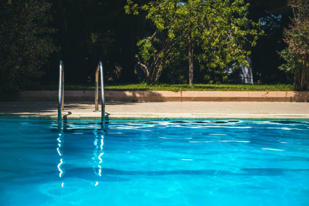
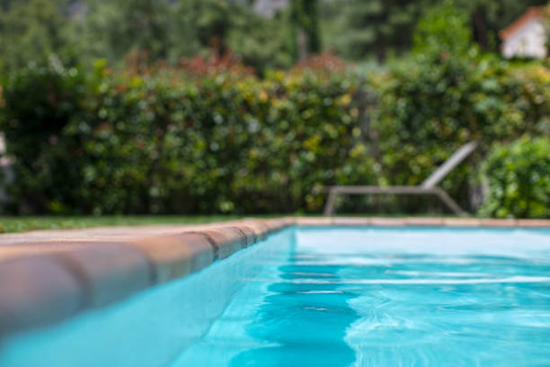
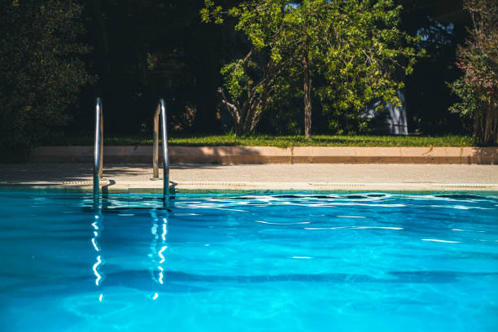
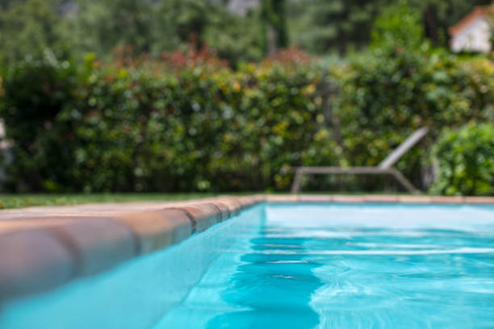

OyG piscinas
OyG Piscinas, fue creada en el año 2019. Nació como un proyecto familiar, luego de pasar pormuchas crisis económicas en la familia, nació como un proyecto con mucho entusiasmo y amor por el trabajo y ánimos de crecimiento tanto personal, como profesional y laboral. Sobre todo, con las ganas de seguir adelante siempre 💪
Quiénes somos
Luis
Luis, nació en 1963, en 1994 formó matrimonio con Kuky, con quien tuvo tres hijos. Es un emprendedor nato, y hoy con 60 años de edad recién cumplidos sigue adelande de su empresa.
Kuky
Kuky, nacida en el año 1964, es la compañera fiel de Luis, quien estuvo a su lado en cada momento de éxito y/o crisis, quien lo apoya y acompaña en todos sus proyectos, incondicionalmente.
Otta
Otta, nacido en 1987, es el hijo menor de la familia, quien se hizo cargo de los proyectos de su padre y continúa adelante en el camino de sus proyectos venideros.
Proyectos
Desde sus inicios, en el año 2019, OyG Piscinas ha realizado una gran cantidad de trabajos y proyectos hogareños, algunos de los cuales mostramos a continuación
 



Distintos proyectos:
Piscina con solarium
Barandas
Detalles
Contactanos:
✉ @oygpiscinas